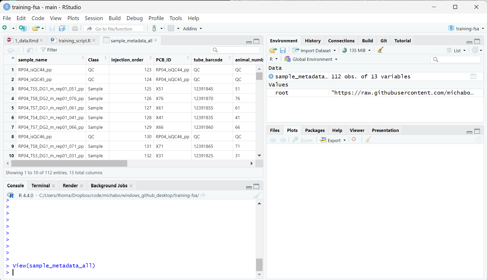

The tutorial will use data generated as part of the the Cefic MATCHING study, the aim of which was to conduct a blinded international ring-trial to investigate whether 6 metabolomics labs, each generating, analysing and reporting metabolomics data from a single exposure study (rodent plasma), generate the same grouping hypothesis (Viant et al. 2024).
Rather than use all the data from the study, the tutorial will focus only on male rats and the processed mass spectrometry data derived from the data collected as part from just one of the ring-trial labs (Phenome Centre Birmingham) .
Mass spectrometry coupled liquid chromatography (in particular high-resolution mass spectrometry with Ultra-high-performance liquid chromatography - UHPLC-MS) is an effective and popular approach for metabolomics and is what was used for data we are using for this tutorial.
Full details of the methods found in the supplemental of Cefic MATCHING publication (Viant et al. 2024).
The UHPLC−MS approach used for our dataset consisited of four assays, comprising of two types of chromatography and two mass spectromety ionisation modes (positive and negative). The chromatographic columns being either a Hydrophilic Interaction Liquid “HILIC” column (primarily to measure polar metabolites) and a C18 column (primarily to measure lipids). These will be referred to as the following from now on:
We will be focusing only on one assay (HILIC_POS) for most steps in the tutorial to make the data analysis more manageable.
The raw data collected from these LC-MS assays can generally can be thought of within 3 dimensions.
So… lets finally start using R and RStudio. Let’s begin with looking at the metadata for the samples to better understand the dataset.
All files for this practical will be downloaded directly downloaded from the Github repository. See the following root URL below.
root <- 'https://raw.githubusercontent.com/michabohealthscience/training-fsa/main'If you are using data downloaded locally please change the
root variable to path where of your data.
The sample metadata is stored in a comma separated text file (.csv).
We can read this into R using the read.csv function and
putting the URL path to the ‘.csv’ file. This will save the metadata as
a dataframe R object.
sample_metadata_all <- read.csv(file.path(root, 'data/HILIC_POS_male/0_sample_metadata.csv'))Lets have a quick look at the sample metadata. We can use the
head function to just see the first few rows
head(sample_metadata_all)## sample_name Class injection_order PCB_ID
## 1 RP04_isQC44_pp QC 123 RP04_isQC44_pp
## 2 RP04_isQC45_pp QC 124 RP04_isQC45_pp
## 3 RP04_TS5_DG1_m_rep01_051_pp Sample 125 X51
## 4 RP04_TS8_DG2_m_rep01_076_pp Sample 126 X76
## 5 RP04_TS7_DG1_m_rep01_061_pp Sample 127 X61
## 6 RP04_TS4_DG1_m_rep01_041_pp Sample 128 X41
## tube_barcode animal_number prep_batch prep_order test_substance Sex
## 1 QC QC QC QC QC QC
## 2 QC QC QC QC QC QC
## 3 12391845 51 2 115 5 M
## 4 12391870 76 2 120 8 M
## 5 12391855 61 2 111 7 M
## 6 12391835 41 2 119 4 M
## Sex_binary dose_group biol_rep
## 1 QC QC QC
## 2 QC QC QC
## 3 2 1 1
## 4 2 2 1
## 5 2 1 1
## 6 2 1 1We can use View(sample_metadata) in a more user friendly
manner within RStudio where you can filter the columns

The following information regarding independent variables for each sample was available prior to unblinding:
(TS6 was excluded prior to exposures).
Important to note here is that there are QC samples throughout the run. We will touch briefly on this later. All other samples are distributed randomly across the run (to help counteract any drift effects across the UHPLC−MS run).
For each test_substance and dose there should be 5 biological replicates (i.e. 5 samples) for this dataset there is 1 technical replicate for each sample.
The ‘prep order’ refers to the preparation of the samples (i.e. metabolite extraction), like the run order, the preparation order should be randomized across the samples to help counteract any bias effect this might have on the metabolite profiles.
For each assay there will also be metadata for each feature (this might also include the metabolite annotated to that feature). Due to the complexity of the data and metabolite annotation there can often be alot of metadata associated with each feature
Lets just check quickly have a look at the m/z and RT values for HILIC POS.
feature_meta <- read.csv(file.path(root, 'data/HILIC_POS_male/0_feature_metadata.csv'))
# only select a few columns
feature_meta_reduced <- feature_meta[,c(1, 3, 6)]
head(feature_meta_reduced)## feature_name mz rt
## 1 M70T578 70.01248058 578.444712
## 2 M70T460 70.02878878 460.364628
## 3 M70T301 70.05927549 300.717252
## 4 M70T519 70.06515683 519.282969
## 5 M70T367 70.07326748 367.057464
## 6 M70T336 70.2508749 336.279876So for this assay alone we have
nrow(feature_meta_reduced) metabolite features. However if
we combine all the assays (HILIC_POS, HILIC_NEG, LIPIDS_POS, LIPID_NEG)
for the male component of the data there are 28,664 features.